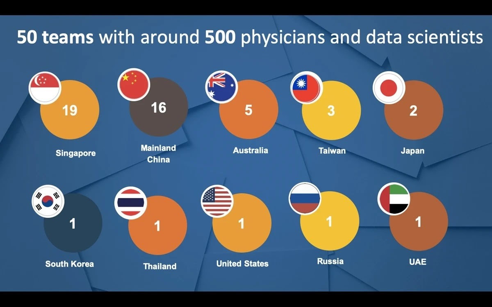

A team from the ROSE Lab took the 2nd Runner-up position among 50 teams from all over the world at the NUS-MIT Healthcare AI Datathon 2020. This three-day datathon (11–13 December 2020) was organized by the National University of Singapore (NUS), National University Health System (NUHS), and MIT Critical Data, aiming to bring together clinicians, data scientists and innovators to address current healthcare problems with data analytics.
Team
- Dr. Lin Shan — Team Leader, Research Fellow
- Rahul Ahuja — Project Officer
- Yang Siyuan — PhD Candidate
- Wang Yufei — PhD Candidate
- Li Ling — PhD Candidate
Supervised by Prof. Alex Kot, Director of ROSE Lab, NTU

Problem: Domain Shift in Medical AI
Our team focused on solving the domain shift problem in deep learning chest X-ray diagnosis AI models. Domain shift is a critical issue where AI models trained on data from one hospital/device perform significantly worse when applied to data from a different source, even for the same diseases.
In the datathon, our team demonstrated the cross-dataset performance degradation of models trained on Chexpert, ChestX-Ray8, and MIMIC-CXR-JPG datasets. We then mitigated the problem using:
- MMD (Maximum Mean Discrepancy) — classic domain adaptation method
- LDDG (Linear-Dependency Domain Generalization) — our team's own domain generalization method [1]